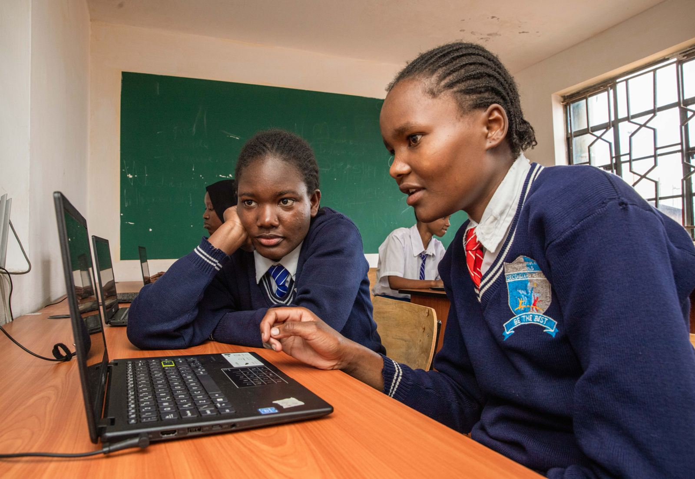

Education
Education
Digital skills
Digital Bridges
Kibera ICT Empowerment Hub
A tech hub where children and young people in Kibera learn coding, robotics and artificial intelligence.
Digital Bridges is one of YDF’s flagship projects. It gives children and young people in Kibera the digital skills they need for the future, starting from as young as eight years old.
What learners get
- Internet access and devices
- Training in coding, robotics, artificial intelligence (AI) and machine learning
- Hands-on bootcamps, mentoring and innovation challenges
Impact
Working with DEAN, Technovation, Code Yetu and Mshauri Trust, the hub trains more than 300 young people every year, with a strong focus on girls. Some have gone on to present their projects at national tech forums.
Why it matters
The hub is more than a computer lab. It’s a safe, welcoming space that builds creativity and digital confidence, and opens a path to jobs in one of Nairobi’s most underserved communities.
In pictures
Support Digital Bridges
Give by M-Pesa or bank transfer in a few minutes, or talk to us about partnering on this project.
More projects
All projectsEducation Women & work
Women & workAfrican Women’s Workforce Initiative
Read more about African Women’s Workforce Initiative Families
Families